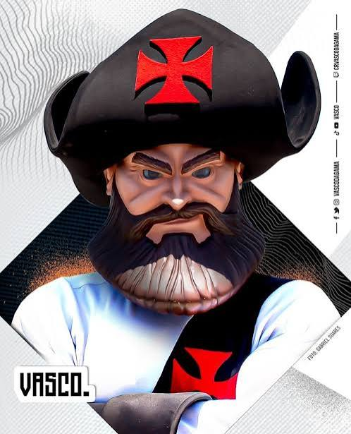

Fundação: 21 de agosto de 1898
Gigante por natureza, o Vasco da Gama foi fundado por imigrantes portugueses. Mais do que suas imensas conquistas em campo, o clube gravou seu nome na história sociopolítica do Brasil ao emitir a "Resposta Histórica" de 1924, onde se recusou a excluir de seu elenco jogadores negros, operários e analfabetos para participar do campeonato organizado pela elite carioca, sendo um pioneiro e eterno bastião da luta contra o racismo.
Impulsionado por sua torcida fervorosa, o Vasco construiu com recursos próprios o lendário Estádio de São Januário. Em campo, foi conhecido nos anos 40 como "Expresso da Vitória" (o primeiro campeão sul-americano invicto, em 1948). Atingiu o ápice no ano de seu centenário (1998) ao vencer a Copa Libertadores, ostentando grandes ídolos como Roberto Dinamite (seu maior artilheiro), Romário e Edmundo.